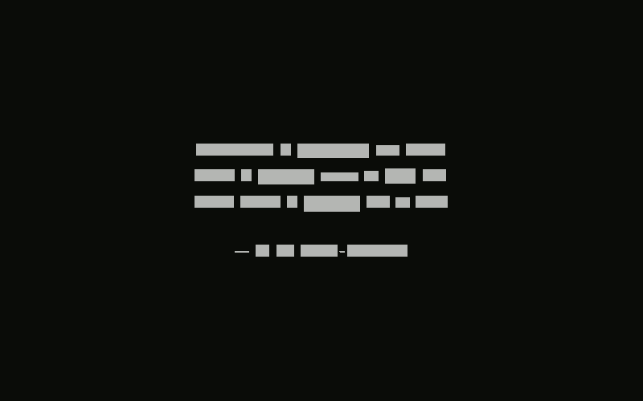
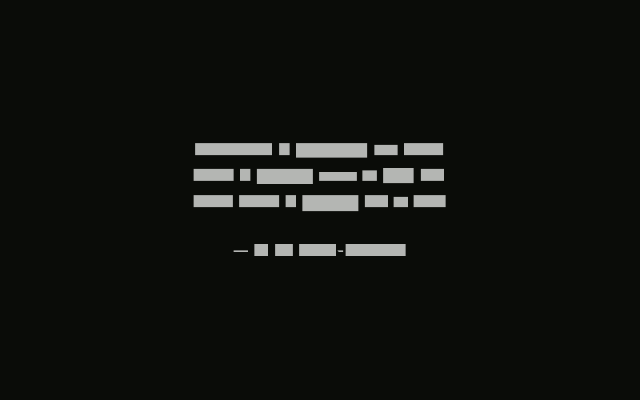

Tab was a simple Chromium extension that replaced the new tab page with one that features a random quote, reminder, or note to self.
8F28F2 0.2 0.1D 0.1V
Tab was a simple Chromium extension that replaced the new tab page with one that features a random quote, reminder, or note to self.
